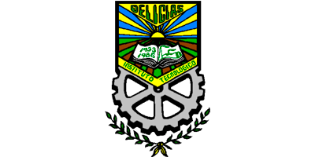
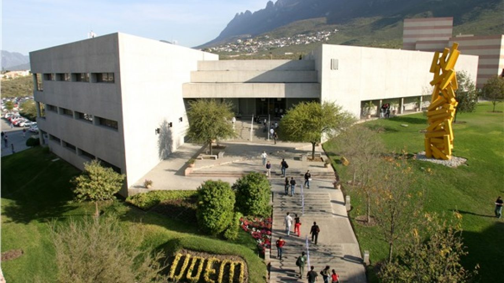

La segunda universidad que encontre cercano es el instituto tecnologico del occidente del estado de hidalgo con un precio aproximado por el primer semestre de 50 mil pesos, se elevan mucho los costos porque es rentar departamento, comida, transporte, y cosas de la universidad como es la inscripcion y materiales